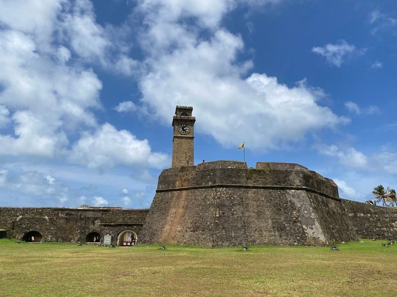
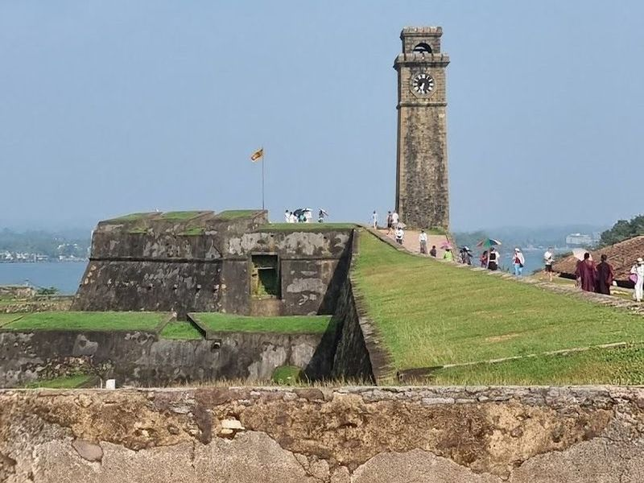
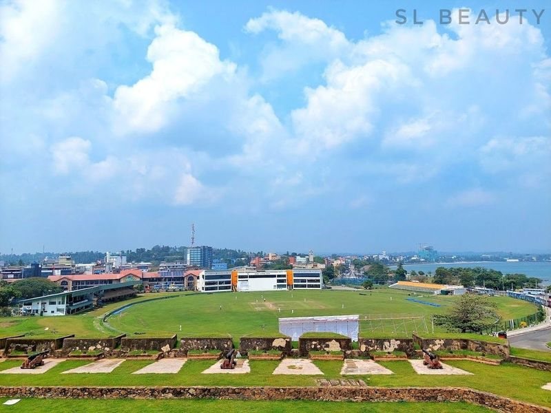
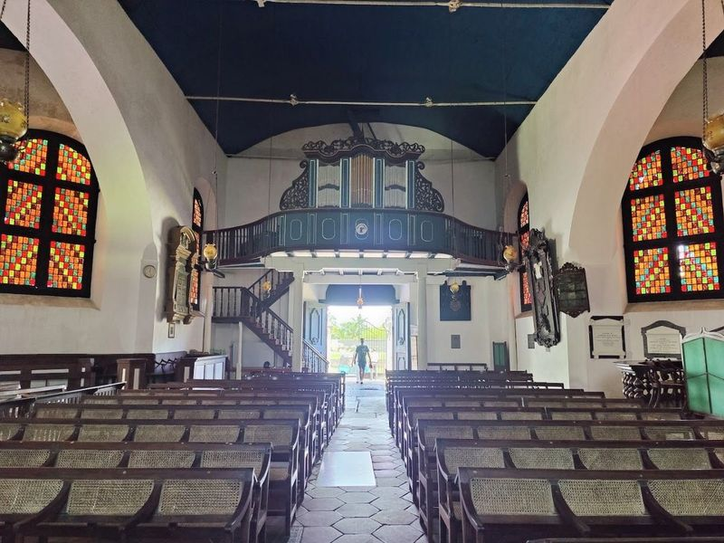
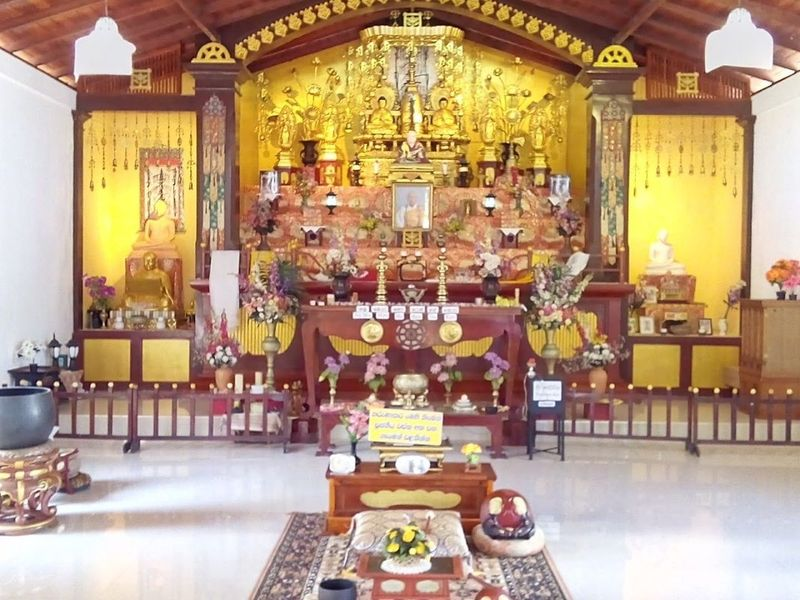
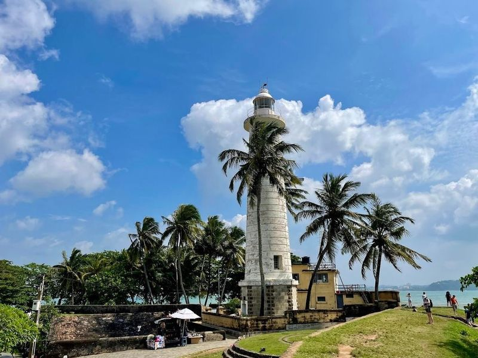
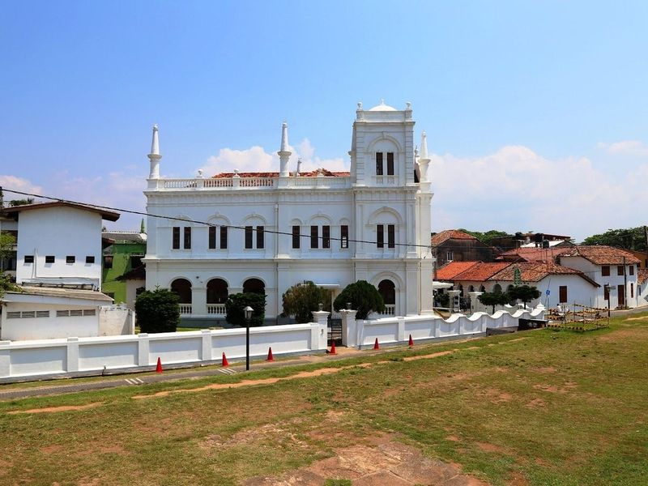
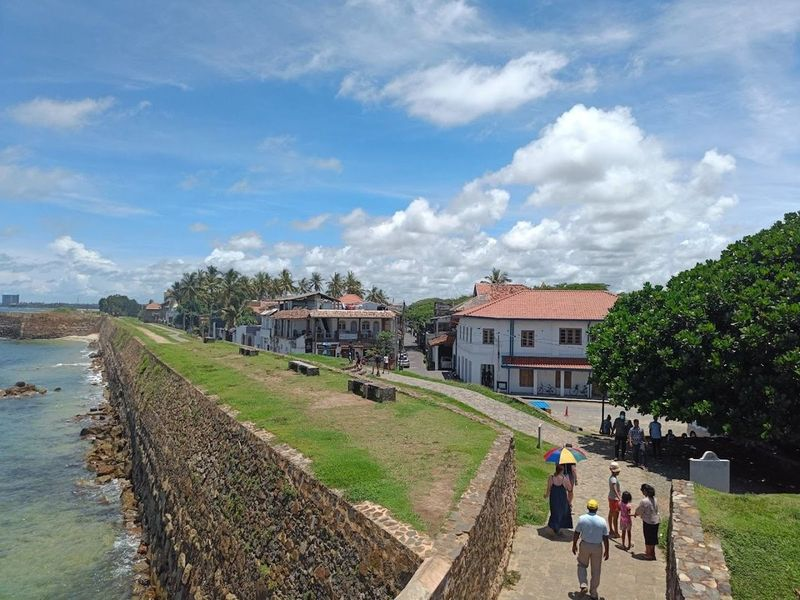
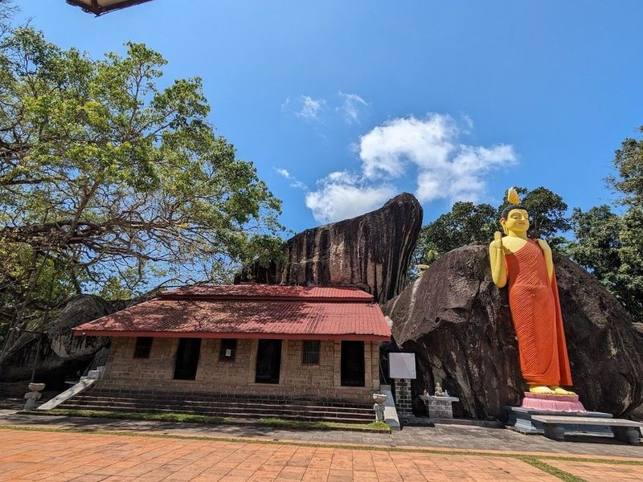
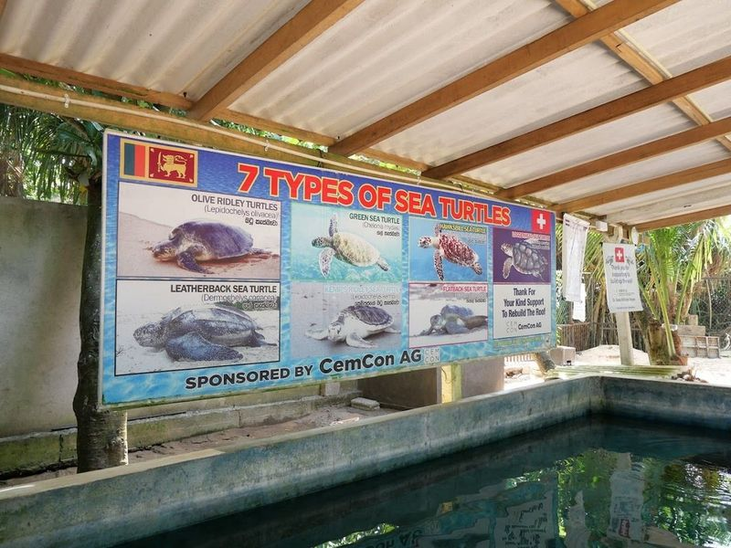

Explore Galle
A Brief History
Galle's natural harbour attracted Arab, Chinese, and European traders before the Dutch fortified the peninsula in the seventeenth century. Ramparts, Reformed church, and merchant houses within the fort record Indian Ocean commerce on Sri Lanka's south coast. Lighthouse walks and warehouse lanes inside Dutch ramparts still orient Indian Ocean traders and visitors.
Attractions Map
Top Sights & Activities

Galle Dutch Fort
Galle Dutch Fort, originally built by the Portuguese in the 16th century and later renovated by the Dutch and British, is a well-preserved sea fort that now houses museums, shops, and cafes. The area surrounding the fort is bustling with various businesses and restaurants. A visit to this historical site offers a glimpse into the architectural wonders of colonial powers. Despite its small size, there are numerous remarkable places to explore within the fort.

Galle Fort Clock Tower
Galle Fort Clock Tower, constructed in 1883 atop a former guard room, is a historic landmark in Galle, Sri Lanka. It was built to honor Dr. P.D. Anthonisz for his service and legislative representation. The monument's architecture and design by John Henry Gues Landon make it a popular photography spot showcasing the beauty of Galle city.

Galle International Cricket Stadium - ගාල්ල ජාත්යන්තර ක්රිකට් ක්රීඩාංගණය
Galle International Cricket Stadium, located near the Galle Fort, is renowned for its picturesque setting and hosts domestic and international matches. The stadium holds historical significance as it was severely damaged by the 2004 tsunami but was restored with contributions from former Australian cricketer Shane Warne. Notably, it witnessed Muttiah Muralitharan's last match and his 800th wicket in 2010.

Dutch Reformed Church
The Dutch Reformed Church, also known as Groote Kerk, is a small 18th-century structure located in Galle, Sri Lanka. While its exterior may not be particularly impressive, the interior boasts stained-glass windows and tiled floors made of tombstones. The church's sparse and cavernous interior features floor etched memorials to the city's early Dutch settlers and a carved dedication to E.A.H Abraham on the southern wall.

Japanese Peace Pagoda - Rumassala
The Japanese Peace Pagoda, located on Rumassala Hill near Unawatuna, is a serene Buddhist temple with a circular deck offering views of the Indian Ocean and the surrounding landscapes. Constructed with the assistance of Japanese monks, this monumental stupa stands as a symbol of peace for people of all nationalities and faiths. Visitors can access the pagoda via a shaded path and will be greeted by its towering white structure adorned with gold-painted statues.

Galle Lighthouse
Galle Lighthouse, located within the historic Galle Fort in Sri Lanka, is a significant maritime structure with a rich history. Originally built by the British in the 19th century and now maintained by the Sri Lanka Port Authority, this cylindrical tower offers panoramic views of ships entering Galle harbor. It played a crucial role during world wars and continues to guide fishing boats today.

Meeran Mosque
Meeran Mosque, located in Galle Fort, is a and landmark in Sri Lanka. The century-old whitewashed building boasts a unique architectural style that combines elements of baroque, British Victorian, and Islamic design. Built in 1904 by Ahamed Haji Ismail, the mosque offers a serene place for worshippers to pray. Its proximity to the beach allows for a cool sea breeze to flow through the mosque.

Flag Rock Bastion
Flag Rock Bastion is a historic site within the Galle Dutch Fort. It served as a signaling station to warn ships of rocky stretches in the bay, with musket shots fired from Pigeon Island near the flag rock. The nearby Triton Bastion features a windmill and offers sunset views. Flag Rock itself was a Portuguese bastion used to signal approaching ships of danger, and today it's popular for cliff-jumping and watching sunsets along the cliff-side.

Yatagala RajaMaha Viharaya
Yatagala Raja Maha Viharaya is an ancient Buddhist temple nestled amidst serene settings in Unawatuna, Sri Lanka. The temple complex, built into rock formations, features numerous statues and cave temples dating back over 2,000 years. Visitors to the area can also explore nearby attractions such as Rumassala, Unawatuna beach, and turtle hatcheries.

Sea Turtle Hatchery Centre, Mahamodara
Sea Turtle Hatchery Centre, Mahamodara is a family-run conservation center dedicated to rescuing and protecting sea turtles. The center houses tanks for injured turtles as well as newly hatched babies. Visitors have the opportunity to witness the release of turtles into the sea and can even participate in this event. The hatchery also offers guided tours where guests can learn about turtle feeding, egg hatching, and night-time egg searches.